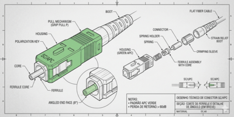
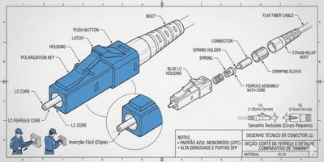
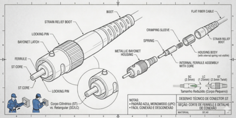
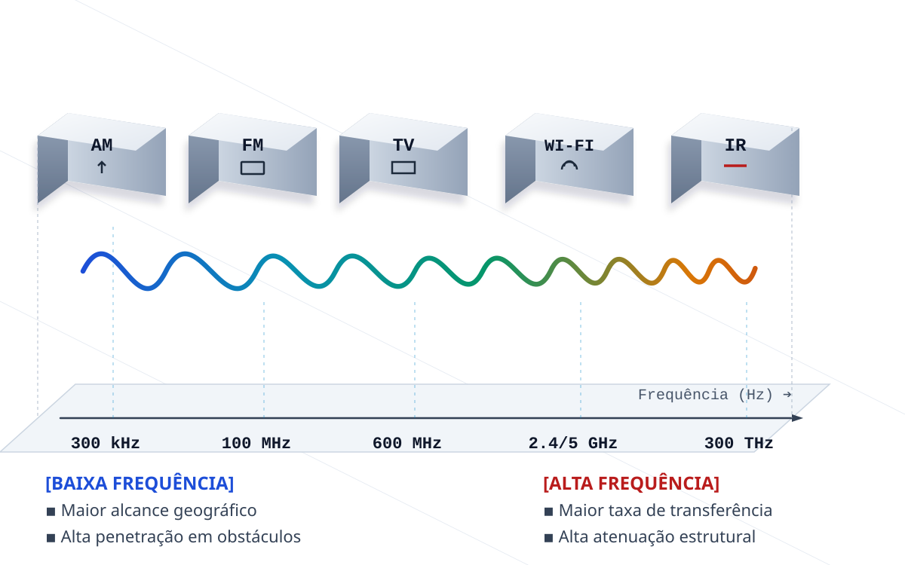

Infraestrutura Física de Redes
AULA 07 - Fibra Óptica e Meios Não Guiados
1. Fibra Óptica
O que é e como funciona
A fibra óptica transmite dados na forma de pulsos de luz - em vez de sinais elétricos como no par trançado. O filamento por onde a luz viaja é feito de vidro ultrapuro, tão fino quanto um fio de cabelo.
O princípio que mantém a luz confinada dentro da fibra é chamado de reflexão total interna: quando a luz tenta sair do filamento de vidro, ela é refletida de volta para dentro - como num espelho - e continua viajando até o destino.
Analogia: imagine um cano espelhado por dentro. Uma lanterna apontada numa extremidade ilumina a outra, independentemente das curvas do cano - a luz vai refletindo pelas paredes até chegar ao destino.
Monomodo vs. Multimodo
Existem dois tipos de fibra, distinguidos pelo diâmetro do filamento interno e pela distância que suportam:
Fibra Multimodo: filamento mais grosso, permite que múltiplos raios de luz trafeguem simultaneamente. Suporta distâncias de até 550 metros. Usada dentro de prédios e entre prédios próximos. Identificada pela capa laranja ou aqua.

Fibra Monomodo: filamento muito fino, apenas um raio de luz trafega por vez. Suporta distâncias de dezenas de quilômetros. Usada em backbones entre cidades e na infraestrutura de ISPs. Identificada pela capa amarela.

Conectores mais Comuns
SC: corpo quadrado, encaixe por pressão. Muito usado em instalações de ISPs e redes corporativas.

LC: corpo pequeno, trava por clipe - similar ao RJ-45. Usado em equipamentos de alta densidade como switches e data centers.

ST e FC: conectores mais antigos, encontrados em instalações legadas. ST usa mecanismo de baioneta; FC usa rosca metálica.

Vantagens e Limitações
Vantagens em relação ao par trançado:
- Imune a interferências eletromagnéticas
- Distâncias muito maiores
- Largura de banda superior
- Mais segura - difícil de interceptar
Limitações:
- Custo mais elevado
- Não transmite energia elétrica - sem suporte a PoE
- Terminação exige equipamento e técnica especializados
- Mais frágil mecanicamente - não pode ser dobrada além do raio mínimo
2. O que é Wireless
Wireless significa literalmente "sem fio". É o termo que designa qualquer tecnologia de comunicação que transmite dados pelo ar, na forma de ondas eletromagnéticas - sem nenhum cabo entre transmissor e receptor.
O rádio AM que você ouve no carro, o Wi-Fi do seu celular e a comunicação de um satélite a 36.000 km de altitude são todos exemplos de tecnologias wireless - cada uma usando uma faixa diferente do espectro eletromagnético.
O Espectro Eletromagnético
As ondas eletromagnéticas se diferenciam pela frequência - quantas vezes a onda oscila por segundo, medida em Hertz (Hz). A frequência determina as características da comunicação:

Essa relação explica por que existem tantas tecnologias wireless diferentes: cada problema de comunicação exige uma faixa de frequência diferente. Uma tecnologia para conectar fones de ouvido não precisa do mesmo alcance que uma tecnologia para conectar continentes.
3. Tecnologias Wireless
Wi-Fi
O Wi-Fi é a tecnologia wireless para redes locais sem fio. Permite que dispositivos se conectem à rede sem cabo, dentro de um espaço físico limitado - uma sala, um andar, um prédio.
Opera em três faixas de frequência:
2,4 GHz: maior alcance, melhor penetração em paredes. Porém é a faixa mais congestionada - dividida com micro-ondas, Bluetooth e outros dispositivos. Velocidades menores.
5 GHz: menor alcance e penetração, mas muito menos interferência e velocidades significativamente maiores. Ideal para ambientes com muitas redes Wi-Fi próximas.
6 GHz: faixa mais recente, disponível apenas em equipamentos modernos (Wi-Fi 6E e Wi-Fi 7). Praticamente sem congestionamento e altíssimas velocidades.
A evolução dos padrões ao longo do tempo:
| Nome | Padrão IEEE | Frequência | Velocidade Máx. |
|---|---|---|---|
| Wi-Fi 4 | 802.11n | 2,4 / 5 GHz | 600 Mbps |
| Wi-Fi 5 | 802.11ac | 5 GHz | 3,5 Gbps |
| Wi-Fi 6/6E | 802.11ax | 2,4 / 5 / 6 GHz | 9,6 Gbps |
| Wi-Fi 7 | 802.11be | 2,4 / 5 / 6 GHz | 46 Gbps |
Velocidades teóricas máximas. O desempenho real depende de distância, obstáculos e número de dispositivos conectados.
O Wi-Fi complementa a infraestrutura cabeada - especialmente para dispositivos móveis - mas não a substitui em ambientes que exigem alto desempenho e confiabilidade.
Bluetooth
O Bluetooth é uma tecnologia wireless de curtíssimo alcance - projetada para conectar dispositivos pessoais entre si, a distâncias de até 10 a 100 metros.
Opera na faixa de 2,4 GHz com baixo consumo de energia. Usado em fones de ouvido, teclados, mouses, caixas de som, smartwatches e transferência de arquivos entre celulares.
Não tem papel em infraestrutura de redes corporativas - mas o técnico de infraestrutura o encontra constantemente em dispositivos de usuários e em periféricos de sala de reunião.
Zigbee
O Zigbee é uma tecnologia wireless projetada especificamente para IoT (Internet of Things) - a comunicação entre dispositivos inteligentes de automação.
Opera em 2,4 GHz com consumo de energia extremamente baixo - sensores Zigbee podem funcionar com pilhas por anos. Alcance de até 100 metros, com suporte a redes em malha onde os próprios dispositivos repassam o sinal entre si.
Usado em: lâmpadas inteligentes, sensores de temperatura e umidade, fechaduras digitais, termostatos, sistemas de irrigação automatizada.
O técnico de infraestrutura encontra Zigbee cada vez mais em instalações residenciais e comerciais modernas - é importante saber identificar e não confundir com Wi-Fi ao diagnosticar interferências em 2,4 GHz.
Redes Celulares - 4G e 5G
As redes celulares são infraestruturas wireless de grande alcance, operadas por operadoras de telecomunicações (Claro, Vivo, TIM, etc.) através de torres de antenas espalhadas pelo território.
4G LTE: tecnologia dominante atualmente no Brasil. Velocidades típicas de 20 a 150 Mbps, latência de 30 a 50 ms. Cobre a grande maioria das áreas urbanas e boa parte das áreas rurais.
5G: quinta geração, em implantação progressiva no Brasil. Promete velocidades de vários Gbps e latência abaixo de 10 ms. Além da velocidade, é projetado para suportar a enorme quantidade de dispositivos IoT das cidades inteligentes e da indústria 4.0.
Para o técnico de infraestrutura, as redes celulares são relevantes como link de backup - quando o link principal (fibra ou cabo) cai, um roteador com modem 4G/5G mantém a conectividade da empresa.
Satélite
A comunicação por satélite permite conectividade em qualquer ponto do planeta - inclusive locais remotos sem nenhuma infraestrutura terrestre.
GEO - Satélites Geoestacionários (36.000 km de altitude): Permanecem fixos em relação à Terra. Cobertura enorme com poucos satélites. Problema: a distância gigante causa latência de 600 ms ou mais - inviável para videochamadas e jogos, aceitável para e-mail e navegação básica.
LEO - Satélites de Baixa Órbita (500 a 2.000 km de altitude): Orbitam rapidamente e em grande número. A distância muito menor resulta em latência de 20 a 40 ms - comparável a links terrestres. O Starlink, da SpaceX, é o exemplo mais conhecido: opera com mais de 6.000 satélites e oferece velocidades de 100 a 300 Mbps praticamente em qualquer ponto do planeta. No Brasil, é usado para conectar escolas e comunidades em áreas remotas e como backup em instalações críticas.
4. Comparativo Geral entre os Meios de Transmissão
| Meio | Velocidade | Distância | Uso típico |
|---|---|---|---|
| Par trançado (Cat6) | Até 1 Gbps | Até 100 m | Estações de trabalho, câmeras, APs |
| Fibra multimodo | Até 10 Gbps | Até 550 m | Backbone interno de prédios |
| Fibra monomodo | 100+ Gbps | Dezenas de km | Backbone entre prédios, ISPs |
| Coaxial | Variável | Centenas de m | CFTV, TV a cabo |
| Wi-Fi | Até 9,6 Gbps* | Até 100 m | Dispositivos móveis |
| Bluetooth | Até 3 Mbps | Até 100 m | Periféricos pessoais |
| Zigbee | Até 250 Kbps | Até 100 m | Automação e IoT |
| 4G/5G | Até 10 Gbps* | Km (celular) | Backup de link, áreas sem cabo |
| Satélite LEO | Até 300 Mbps | Global | Áreas remotas, backup |
*Velocidade teórica máxima.
Síntese do Bloco 3
Com esta aula, o bloco de Meios de Transmissão Físicos está concluído. O aluno agora tem uma visão panorâmica de todos os meios disponíveis - guiados e não guiados - e sabe identificar qual é o mais adequado para cada situação.